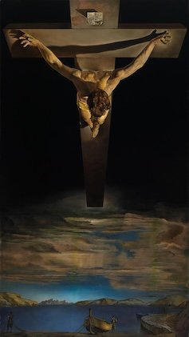

Christ of Saint John of the Cross
Salvador Dalí · 1951 · Oil on canvas · 205 × 116 cm · Kelvingrove Art Gallery and Museum, Glasgow
In copyright. Look and learn: shown for study, not for download.
To get the angle of the body, Dalí had the Hollywood stuntman Russell M. Saunders hung from an overhead gantry. The design comes from a drawing by the sixteenth-century friar John of the Cross, and the water below is the bay of Portlligat, where Dalí lived. Tom Honeyman bought it for Glasgow in 1952 for £8,200, copyright included, against a catalogue price of £12,000; students at Glasgow School of Art petitioned against the purchase. In 1961 a visitor attacked it with a stone and tore the canvas with his hands.